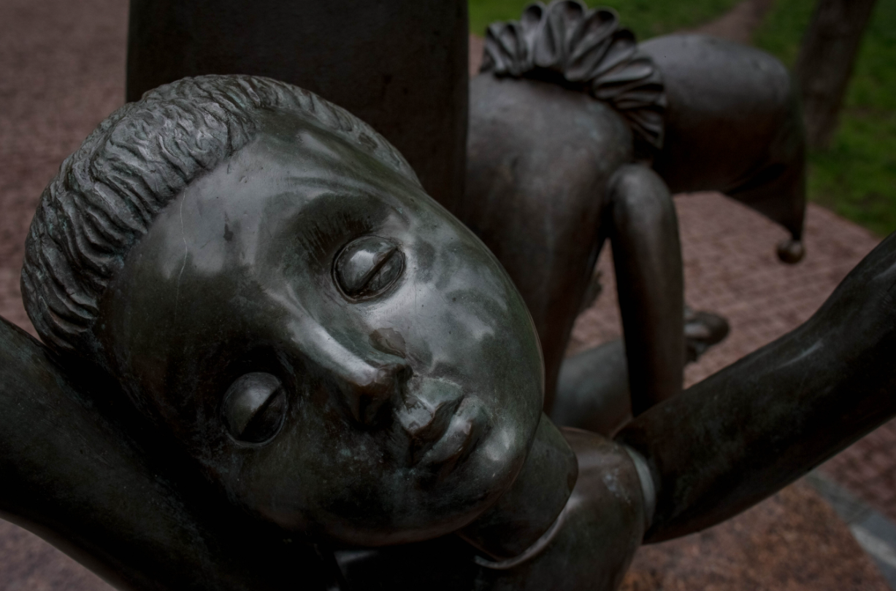

Передісторія
Переважна більшість євреїв в Російскій імперії проживала на українських і польських землях внаслідок запровадженої російською владою дискримінаційної смуги осілості. Так, за даними словника «Голокост» за редакцією Вольфганга Бенца , на 1941 рік в СРСР проживало близько 2 млн євреїв. За даними Франка Гольчевскі, на час окупації нацистами українських земель тут залишалося близько 1 млн євреїв, оскільки багато євреїв було вивезено в евакуацію за Урал, а чоловіки призовного віку потрапили в Червону армію.
Читати далі
Пам'ять євреїв увічнили тільки після розпаду Радянського Союзу. «Менору» (главный символ иудаизма) відкрили в кінці вересня 1991 року. «Верховна Рада України прийняла Акт про проголошення Незалежності, але ще не було референдуму. Кравчук виступав ще в статусі голови Верховної Ради. Тоді він офіційно просив вибачення за всю шкоду, заподіяну євреям на українській землі », - розповідає Руккас. «Менору» поставили на кордоні одного з відрогів Бабиного Яру і двох колишніх кладовищ - Єврейського і Кирилівського православного. До пам'ятника ведуть дві алеї - Дорога скорботи (з вул. Юрія Іллєнка) і Алея праведників (з вул. Олени Теліги). «Голос крові брата твого кличе до мене з землі», - написано на пам'ятнику. У січні 2001 року пам'ятник відвідав президент Ізраїлю Моше Кацав та посприяв встановленню меморіальної плити. Плита одразу привернула увагу вандалів-антисемітів, які періодично здійснювали наруги над пам'яттю вбитих українських євреїв. Плита багаторазово розбивалася, а пам'ятник обливали фарбою.
Читати далі
Біля «Менори» в Бабиному Яру, де раніше було Кирилівське православний цвинтар, - один дерев'яний хрест. Його встановили на честь розстріляних в листопаді 1941 року архімандрита Олександра (Вишнякова), протоієрея Павла і схимонахині Естер, які закликали чинити опір німцям. Трохи далі до обриву - ще п'ять металевих хрестів, присвячених священнослужителям. «І на цьому місці вбивали людей в 1941», - написано на одному з них. Під хрестами - насипу, схожі на могили, але справжніх поховань на цьому місці немає, каже Руккас. Хто встановив ці хрести - невідомо. У 2012 році біля них побудували храм-каплицю, теж на честь розстріляних священнослужителів.
Точних імен авторів не відомо
Читати далі

Дівчинка з поламаними іграшками - перший пам'ятник при виході з метро «Дорогожичі». Він стоїть на початку Алеї мучеників, яка веде в центр парку. Точна кількість загиблих в Бабиному Яру дітей невідомо - під час розстрілів німці не вважали тих, кому не було трьох років. За деякими даними, на дітей шкодували кулі, тому їх часто забивали до смерті палицями або просто закопували. Пам'ятник встановила комунальна влада.
Пам'ятник встановлений 30 вересня 2001. Скульптор — Валерій Медведєв, архітектор — Юрій Мельничук (за участю Р. Кухаренка).
Читати далі
За радянських часів тему трагедії в Бабиному Яру намагались якщо не стерти з людської пам’яті, то принаймні замовчати. Тим, хто приходив на місце розстрілів ушанувати пам’ять жертв, загрожували виклики в КДБ, неприємності на роботі, а то й арешти. Попри це знаходились такі, що не зважали на цю небезпеку. Рафаїл Нахманович, який працював тоді режисером на студії хронікально-документальних фільмів, зміг відзняти цей мітинг на камеру. Плівка, щоправда, згодом безслідно зникла.Ось як він розповідає про події сорокарічної давнини: «Ми знімали якусь картину і тому мали апаратуру, камеру й машину. Я вирішив: поїдемо туди й познімаємо. Оператором був Тімлін. Він побіг у натовп і став знімати. У цей час до мене підбіг тімлінський асистент і каже: „Там питають, хто головний“. Я пішов до тих, які питали. Це були два дуже статечні молоді чоловіки у штатському вбранні. Вони спитали: „Що ви знімаєте?“ Я сказав: „Знімаємо людей на Бабиному Яру! Припинити зйомку?“ — „Ні, знімайте“. А за тиждень відбулося засідання Держкіно, на якому вкотили по суворій догані з попередженням нам із Тімліним та директорові студії — „за створення на студії атмосфери безвідповідальності“ й так інше».
Говорячи про пам’ятник, що був відкритий у Бабиному Яру 1976 року. Цьому передували численні погодження, вагання, призупинення вже початих робіт. Постанову «Про створення пам’ятника у Бабиному Яру загиблим радянським громадянам» Кабмін і ЦК компартії України видали ще 1945 року. Під документом стояли підписи Коротченка та Хрущова. Оголосили навіть закритий конкурс проектів, але жодного проекту як основи майбутнього пам’ятника не ухвалили.
Лише через багато років, вибравши найменш трагічний проект, відкрили пам’ятник із написом російською та українською мовами (напис на ідиш додали лише наприкінці 1980-х): «Тут у 1941–43 роках німецько-фашистськими загарбниками було розстріляно понад сто тисяч громадян міста Києва та військовополонених».
Та попри те, що від 1976-го вже було куди класти квіти для вшанування жертв, сміливців, що зважувалися на це, дедалі меншало. КДБ знову «закрутив гайки», і людей, що в річницю трагедії прямували до Бабиного Яру, знімали з потягів, штрафували, саджали на 15 діб адміністративного арешту за сфальсифікованими звинуваченнями.
Читати далі

Пам'ятник радянським громадянам і військовополоненим
Радянська влада відкрила його в 1976 році, через 35 років після трагедії в Бабиному Яру. Це сталося тільки через масові акцій протесту, каже історик Андрій Руккас. Двадцять дев'ятого вересня 1966 року біля тисячі людей зібралися біля урочища і зажадали увічнити пам'ять про жертви. Мітинг організували літератори Віктор Некрасов, Іван Дзюба, Борис Антоненко-Давидович і Євген Сверстюк. Влада навіть встановила в Бабиному Яру тимчасову стелу і оголосила архітектурний конкурс. Жоден проект влада не задовольнив, тому монумент замовили іншому скульптору - Михайлу Лисенко Відкритий 2 липня 1976р.
Бронзовий пам'ятник присвятили «радянським громадянам і військовополоненим солдатам і офіцерам Радянської армії, розстріляним німецькими фашистами у Бабиному Яру». Він зображує 11 фігур, серед яких - комуніст-підпільник, солдат, моряк, закохана пара, мати з дитиною і стара жінка. Про те, що в урочищі розстрілювали десятки тисяч євреїв, монумент не згадує.
Автори — скульптори М. Лисенко В.Сухенко , О. Вітрик, архітектори А. Ігнащенко, Л.Іванченко, В. Іванченков.
Бабин Яр у наші часи
Зараз на території Бабиного Яру існує безліч пам’ятників присвяченим цілим народам або окремим людям.
Пам'ятник радянським громадянам і військовополоненим
Радянська влада відкрила його в 1976 році, через 35 років після трагедії в Бабиному Яру. Це сталося тільки через масові акцій протесту, каже історик Андрій Руккас. Двадцять дев'ятого вересня 1966 року біля тисячі людей зібралися біля урочища і зажадали увічнити пам'ять про жертви. Мітинг організували літератори Віктор Некрасов, Іван Дзюба, Борис Антоненко-Давидович і Євген Сверстюк. Влада навіть встановила в Бабиному Яру тимчасову стелу і оголосила архітектурний конкурс. Жоден проект влада не задовольнив, тому монумент замовили іншому скульптору - Михайлу Лисенко Відкритий 2 липня 1976р.
Бронзовий пам'ятник присвятили «радянським громадянам і військовополоненим солдатам і офіцерам Радянської армії, розстріляним німецькими фашистами у Бабиному Яру». Він зображує 11 фігур, серед яких - комуніст-підпільник, солдат, моряк, закохана пара, мати з дитиною і стара жінка. Про те, що в урочищі розстрілювали десятки тисяч євреїв, монумент не згадує.
Автори — скульптори М. Лисенко В.Сухенко , О. Вітрик, архітектори А. Ігнащенко, Л.Іванченко, В. Іванченков.
Читати далі
Зараз на території Бабиного Яру існує безліч пам’ятників присвяченим цілим народам або окремим людям.
Реконструкція парку, 2016 рік
До 75-х роковин трагедії президент Петро Порошенко розпорядився привести в порядок територію Бабиного Яру. Тоді в парку вимостили доріжки і встановили інформаційні стенди на Алеї праведників. На виході з метро побудували невелику будку - це волонтерський центр, який повинен працювати в пам'ятні дні.
Читати далі
- Автори
- Р.ЯРЕСЬКО
- С.КОЛОДЯЖНИЙ
- М.ДЯДЮНОВ
- Б.ШУМЕЙКО